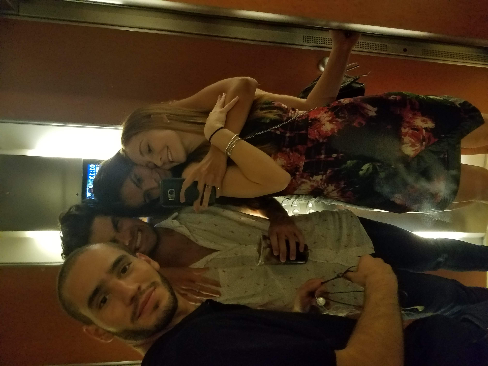
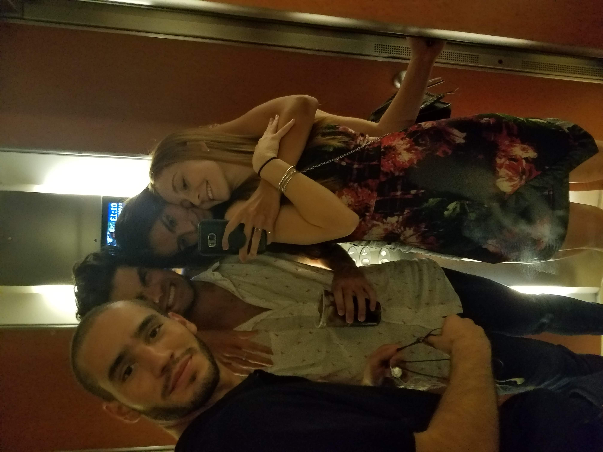

Currently living in Gijón and a a year away from getting my Master´s Degree on Industrial Engineering. I was born and raised in Caracas, Venezuela, where I lived until I was 18 years old, when I moved to Spain to get my Bachelors Degree on Industrial Engineering (2021)
What makes me valuable
I have a good attitude and always see the positive in every situation. This is very helpful when encountering problems and being able to solve them
I´m smart and can learn new things rather quickly
I´m fun and a nice person to have around. I´m loyal and a good friend
I have different talents, but specially I´m resourceful and always find a way to solve problems and don´t get stuck or give up thinking there is no solution
What I have to work on
Organizing my goals. Don´t set a new plan every other month
When it comes to interpersonal relationships, I shouldn´t always assume the negative is true. Don´t asssume the worse when guessing what someone else is thinking/feeling
Don´t make excuses to deliver things undone or not as good as I could make them
Progress
100% 50% Web Development basic knowledge:
5%
My goal
I have always found the freedom of remote working very intersting, and my recent experiences and certain people have pushed me towards actually setting that goal for myself. Working from wherever I want and managing my own time are my main targets at the moment.
My plan
Finding a good intership
Completing my Masters Degree and becoming a Superior Industrial Engineer
Become a full-stack developer
Work from my computer living anywhere I want
Have my own company and offer my services, keeping all of the money I generate with my work


 
